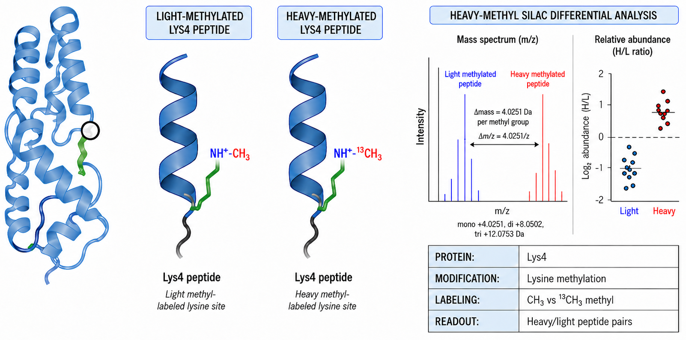

SILAC Heavy-Methyl Post-Translational Modification Proteomics Analysis in Saccharomyces cerevisiae

This project evaluated isotopically labeled methylation dynamics by comparing heavy carbon-13-labeled methionine/methyl groups with light post-translational modification (PTM) signals, while also supporting broader PTM-level analysis in Saccharomyces cerevisiae.
To support this analysis, an R-based pipeline was built to process Spectronaut output generated by a university proteomics core facility. The workflow performed data cleaning, annotation, PTM identification, and heavy-to-light PTM pairing to quantify isotopic abundance ratios and general PTM differences across experimental conditions. Pathway and Gene Ontology enrichment analyses were then used to interpret the biological relevance of the observed PTM changes.
Deliverables
- Interactive HTML Report: An interactive HTML report documenting the data cleaning workflow, analytical strategy, and major findings, enabling researchers to efficiently explore and interpret the results.
- Spreadsheet Results: Multi-sheet Excel workbooks containing heavy-to-light PTM ratio results, general PTM abundance analyses, and enriched pathway and Gene Ontology (GO) terms.
- Data Dictionary: A data dictionary defining result fields and output mappings.
Publications
- Manuscript in preparation/staging